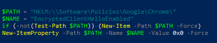

Провайдер МГТС, установлен в качестве службы ytdisbystro. Все прекрасно работает, YT, Discord, заблокированные сайты РКН, а вот rutracker не хочет ERR_CONNECTION_RESET, самое интересное, что через firefox открывается, но как то через раз. Из особенностей у меня в хроме отключен kyber и quick, но это особо роли не играет тк я возвращал в дефолтный статус это ничего не меняло.
ech в хроме отключите
Вроде как с этого года ECH не отключить в новых версиях
upd отключил через политку, пришлось создать ветку в реестре . Заработало. Спасибо

Включите все обратно и добавьте в myhostlist.txt (или в russia-blacklist.txt если старая версия) домен cloudflare-ech.com
Следить надо за новостями 
И кайбер и квик верните на дефолт, запрету их отключение не нужно.
у рутрекера есть свое расширение, прямо в магазине хрома, оно открывает доступ не только к самому рутрекеру, но и к регионально скрытым раздачам
у меня с ним то работают сайты с ECH то не работают, в том числе и рутрекер, причём такое поведение рутрекера у меня было еще до блока ECH (правда не помню, он весь не грузился или частичо)
Спойлер
{kind=link}
- Добавил в обход cloudflare-ech.com - рутрекер заработал, через день заметил что какие то сайты с ECH всё равно не открываются, а какие то открываются (поддержку сайтами ech проверял)
- В дебаг логе увидел обращение к a.nel.cloudflare.com, добавил его - стали открываться
- На след день опять заметил что рутрекер то открывается то нет, подумал на doh comss - cделал форвард рутрекер на гугловый doh - рутрекер стал открываться
- Потом опять заметил что сайты не все открываются с ECH
Короче больше всего бесит что нет постоянства + проверка блокчекком cloudflare-ech.com не возможна, сайт доступен, а занчит блокчек его не проверяет.
Я его добавлял в свои общие страты, в гуул видео страту, в те что в теме про ECH писали, результат 1, то работают сайты то нет.
ps
в итоге пока отключил ech хрому, жду новую версию запрета с мультисплитом, попробую через него пустить cloudflare-ech.com
ps
щас сам читаю, и уже не понимаю ретрекеру помог другой дох или я психанул и отключил ech когда techpowerup нормально не открылся )
У меня рутрекер и вообще все сайты с ECH перестали грузить в ночь с 10 на 11, опытным путём выяснил, что cloudflare-ech.com у меня пингуется только с IPv6 адресом, а в zapret он у меня выключен был, включил IPv6 и всё заработало. При выключенном v6 techpowerup тоже не открывает.
Если рутрекер подгружается не полностью (нет стилей, только текст), как у вас на скриншоте, попробуйте добавить домен rutracker.cc в программу обхода/проксирования. Мне помогло.
пробовал, без изменений
пока вернул ECH, хочу посмотреть будет ли влиять на него, пока мне кажется что comss всё таки виноват
Я вообще с комсса ушел, толку от него было лишь в том, что инсту открывал. Через контролд инсту не открывает, старый сервер (который открывает) постоянно штормит, через контролди тоже.
Мне инста не нужна, а нужна скорость запросов/ответов, поэтому ушел на DoH Cloudflare
Домен в обходе есть, естессно
3ий день с рутрекером всё ок, неделю посижу еще посмотрю, потом верну comss и посмотрим вернётся ли проблема. У меня мозгов нет, а на комсе работает гпт для скриптиков всяких и глупых вопросов) не могу себе в таком отказать, в скорости запросов/ответов это как проявляется? типа сайт открывается на 0.05 сек быстрее?
ECH включен
DNS forward
server=/rutracker.org/8.8.8.8
server=/rutracker.cc/8.8.8.8
А чтобы работал gpt надо прописать в hosts:
204.12.192.219 chatgpt.com
dns можно не менять.
У меня сегодня Рутрекер и ещё один сайт на ДНС от комсс и Клаудфларе стали плохо работать - то открываются, то нет. Временно перешел на ДНС от Гугла. Тоже с задержками, но хоть открываются.
Похоже, надо искать какую-то альтернативу ДНС - не Клаудфларе и не комсс.
Спс, учту.
хз чё по рутрекеру, просто стал работать нормально
после перехода с comss на другой doh, всё норм - 4 дня тестов
перешёл обратно на comss, всё норм - 4 дня тестов